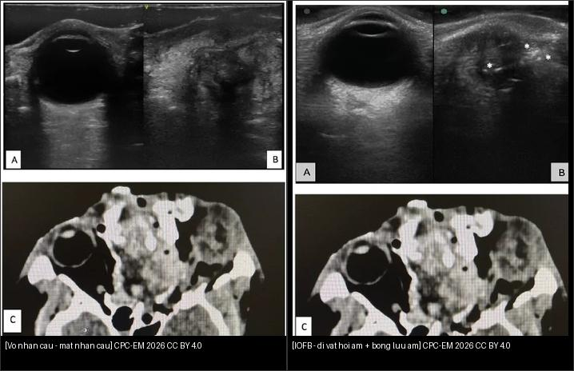
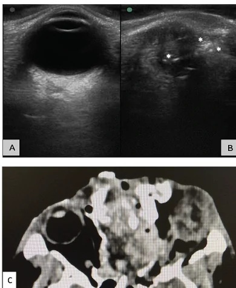
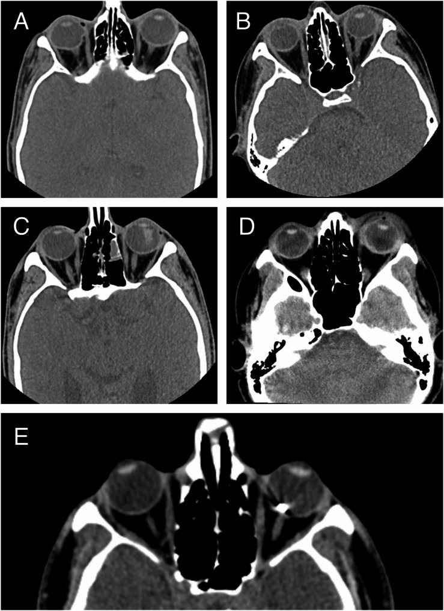
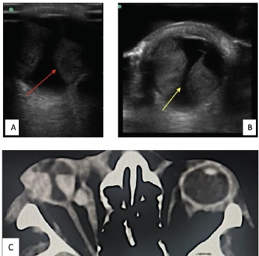

449 — Chấn thương mắt & dị vật nội nhãn (IOFB): CT 1 mm + thang OTS / Ocular trauma & intraocular foreign body
Tags: pattern:chan-thuong-mat vung:nhan-cau-hoc-mat protocol:CT-1mm
Mức chắc chắn (certainty): tổng hợp y văn (literature synthesis) — nhóm tự biên từ 3 nghiên cứu mở (Siêu âm trong chấn thương CPC-EM 2026 CC BY 4.0 + CT/OTS BMC Ophthalmol 2025 CC BY-NC-ND + hình thái IOFB Graefes Arch 2026 CC BY 4.0), chưa gắn ca nguyên văn đơn lẻ.
1. Tổng quan — vỡ nhãn cầu là tối khẩn, CT 1 mm là chuẩn đầu tay + số thang OTS
- Chấn thương hở nhãn cầu (open globe injury, OGI): rách toàn bộ thành mắt (giác mạc/củng mạc) — tối khẩn, dễ mù; dị vật nội nhãn (intraocular foreign body, IOFB) gặp ở ~1/3 ca chấn thương hở. TẠI SAO CT là đầu tay: nhanh, không cần BN hợp tác, loại IOFB/canxi/kim loại + xương, đánh giá IOFB nhỏ tới 0,06 mm³ (sens > 65%, spec 90%).
- TẠI SAO không được đè ép mắt nghi vỡ: đè lên nhãn cầu vỡ làm thoát dịch kính/tổ chức nội nhãn — siêu âm mắt chống chỉ định khi nghi vỡ nhãn cầu (trừ kỹ thuật bồn nước — water bath — không đè).
- Thang OTS (Ocular Trauma Score) — 6 biến: thị lực đầu, vỡ nhãn cầu, viêm nội nhãn, chấn thương xuyên, bong võng mạc, RAPD — điểm 0–100, chia 5 mức:
- Mức V = 92–100, IV = 81–91, III = 66–80, II = 45–65, I = 0–44 (điểm càng thấp tiên lượng càng xấu).
- Số nằm lòng IOFB (39 ca phẫu thuật): kim loại/từ tính 82%, khối lượng trung bình 20,49 mg, dài 4,02 mm × rộng 1,40 mm × dày 0,93 mm; nguyên nhân hàng đầu đục/đe kim (hammer chisel) 56,4%.
2. Gamut dấu CT chấn thương hở nhãn cầu (đọc 5 dấu + số)
- Bất thường củng mạc nặng/mất thể tích nhãn cầu (globe collapse) — 34,1%: dấu mạnh nhất liên quan OTS I–II (OR 1,36, p = 0,006 trên đa biến) — mắt xẹp, bờ không đều.
- Trật thủy tinh thể (dislocated lens) — 33,3%: phổ biến nhất ở OTS III; đi kèm vỡ bao/Zonule.
- Mật độ dịch kính bất thường (xuất huyết dịch kính) — 26,8%: OR 1,70, p < 0,001 với OTS I–II — dấu tiên lượng mạnh nhất.
- Dị vật nội nhãn hoặc khí — 25,2%: kim loại rất tăng đậm độ + giả ảnh tia (streak artifact); gỗ/kính thấu quang (khó thấy).
- Võng mạc–hắc mạc dày — 8,1% (ít gặp); 27,6% không thấy dấu CT nào — CT bình thường KHÔNG loại được vỡ nhãn cầu (phải soi/phẫu thuật).
- Cạm bẫy định khu: ≥ 3 dấu CT → nguy cơ OTS I–II tăng mạnh (OR 6,82, p = 0,001); không dấu nào → nguy cơ thấp (OR 0,05).
3. Bảng so sánh phân biệt (ma trận đối chiếu)
| Thực thể (entity) | Hình ảnh điển hình | Chốt vào (rule-in) | Chốt loại (rule-out) | Gợi ý xác nhận |
|---|---|---|---|---|
| Vỡ nhãn cầu (globe rupture) | Bờ củng mạc không đều + mất thể tích + XH dịch kính | Mắt xẹp + XH dịch kính + đau giảm thị lực nặng | Nhãn cầu tròn đều + dịch kính trong → khả năng ít | CT + thăm khám dưới kính hiển vi |
| IOFB kim loại | Nốt tăng đậm độ + giả ảnh tia (streak) | Tăng đậm độ + artifact tia + tiền sử đập kim/đe | Thấu quang không tia → gỗ/kính/không IOFB | CT 1 mm + cắt dịch kính gắp |
| IOFB gỗ/kính | Thấu quang/thấu quang một phần + khí cạnh | Đường vào + khí + không thấy kim loại | Tăng đậm độ rõ → kim loại | Siêu âm B-scan (nếu an toàn) + thăm dò mổ |
| Trật thủy tinh thể | TTT lệch khỏi trục + mất cân xứng 2 mắt | TTT lệch/ra khỏi vùng đồng tử | Vị trí TTT bình thường → khác | CT + soi đèn khe |
| Rách củng mạc che lấp | Dày củng mạc khu trú + máu dưới kết mạc | Máu dưới kết mạc + đồng tử méo | Không máu + không đổi hình → theo dõi | Thăm khám mổ (CT có thể âm tính) |

Trái: vỡ nhãn cầu mất thể tích (siêu âm A + CT C). Phải: vỡ nhãn cầu + IOFB hồi âm mạnh (asterisk) + bóng lưu âm sau (siêu âm B + CT C). Nguồn: Chawang et al., Clin Pract Cases Emerg Med 2026 Fig. 3 + Fig. 5 (PMC13518040), CC BY 4.0. Ảnh ghép letterbox.Quiz composite: che 2 nhãn, hỏi bên nào có dị vật, dấu siêu âm nào chốt?
Bấm để hiện đáp án
- Trái = vỡ nhãn cầu đơn thuần — mất thể tích, bờ không đều, không có cấu trúc hồi âm mạnh.
- Phải = vỡ nhãn cầu + IOFB — cấu trúc hồi âm mạnh (echogenic) kèm bóng lưu âm sau (posterior acoustic shadowing) là chốt của dị vật.
- Lưu ý an toàn: siêu âm chỉ khi đã loại/luôn cân nhắc vỡ nhãn cầu — kỹ thuật bồn nước giảm đè ép.
Vì sao MRI nguy hiểm khi có IOFB kim loại + khi nào siêu âm được phép
- MRI + IOFB kim loại = cấm: từ trường kéo/ xoay dị vật từ tính → rách thêm võng mạc/xuất huyết — luôn CT trước để loại kim loại/từ tính (IOFB 82% là kim loại, phần lớn từ tính).
- Siêu âm mắt trong chấn thương: rất tốt cho xuất huyết dịch kính, bong võng mạc, bong hắc mạc, IOFB (sens ~93%, spec ~98% cho tổn thương phần mềm) — NHƯNG chống chỉ định đè ép khi nghi vỡ nhãn cầu.
- Giải pháp an toàn (kỹ thuật bồn nước cải tiến): găng tay chứa nước muối sinh lý đặt lên mi mắt + đầu dò linear tần số cao 6–13 MHz trên găng (không chạm nhãn cầu) — vừa an toàn vừa ảnh nét hơn; giữ thermal index < 1 và SPTA < 50 mW/cm².
4. Protocol chụp + xử trí
- CT hốc mắt 1 mm, không cản quang, axial + coronal (đầu tay): tìm 5 dấu (mục 2) + IOFB/khí + gãy xương hốc mắt; 2 mm là độ dày thường dùng phù hợp (nghiên cứu dùng 2 mm, cách nhau 1,5 mm) — lát mỏng ≤ 1 mm cho chi tiết củng mạc/IOFB nhỏ.
- Nghi vỡ nhãn cầu: che chắn nhãn cầu (shield) — KHÔNG đè ép, không nhỏ thuốc gây áp lực, không siêu âm thường quy; kháng sinh toàn thân + uốn ván + mổ khâu trong < 24 giờ.
- IOFB: CT loại kim loại trước mọi MRI; cắt dịch kính (vitrectomy) gắp dị vật + kháng sinh nội nhãn; IOFB hữu cơ (gỗ) → nguy cơ viêm nội nhãn cao hơn.
- Tính OTS để tiên lượng thị lực (mục 1) và tư vấn BN/gia đình.
- Cắt lớp kèm toàn thân: chấn thương mắt nặng thường kèm chấn thương sọ não + gãy xương mặt (ưu tiên khám toàn thân trước).
flowchart TD
A[Chan thuong mat] --> B{Nghi vo nhan cau?}
B -->|Co| C[Che chan - KHONG de ep - KS + uon van - mo < 24 gio]
B -->|Khong| D[CT hoc mat 1 mm axial+coronal]
C --> D
D --> E{IOFB?}
E -->|Kim loai tang dam do + tia| F[Cam MRI - cat dich kinh gap]
E -->|Thau quang/ghi ngo| G[Do vat hu co: nguy co viem noi nhan cao]
D --> H{5 dau CT + OTS}
H -->|>=3 dau| I[Nguy co cao OTS I-II: mo sap]
H -->|Khong dau| J[CT binh thuong KHONG loai vo: soi/tham kham]
5. Biến thể bình thường và cạm bẫy
- CT bình thường KHÔNG loại được vỡ nhãn cầu (27,6% không dấu). Rách nhỏ vùng sau xích đạo có thể kín trên CT — thăm khám/soi mổ vẫn quyết định.
- Máu dưới kết mạc (subconjunctival hemorrhage) + đồng tử méo: dấu lâm sàng "rách củng mạc che lấp" — CT có thể chỉ thấy mắt dày nhẹ; đừng bỏ sót vì CT "sạch".
- Giả ảnh tia (streak artifact) của IOFB kim loại có thể che lấp tổn thương lân cận — đọc cả cửa sổ xương/mô mềm.
- Nước mắt/nước muối trong bao mắt giả giống tổn thương — hỏi tiền sử cắt nhãn cầu/đặt mắt giả.
- Bỏ sót dị vật gỗ/kính thấu quang: vết thương vào nhỏ + đau kéo dài → siêu âm/mổ tìm; gỗ gây mủ muộn.
- Đè ép khi khám/siêu âm mắt nghi vỡ = sai lầm chết mắt — luôn che chắn, không đè.
6. Tự lượng giá — Blind Quiz
Ca 1 — Bệnh nhân chấn thương do pháo. Siêu âm + CT này chốt gì?

- Hỏi: (B) cấu trúc hồi âm mạnh kèm bóng lưu âm sau là gì? Xử trí trước mọi thứ?
Bấm để hiện đáp án (findings + chẩn đoán)
- Dấu hiệu (findings): (A) mắt lành; (B) vỡ nhãn cầu + cấu trúc hồi âm mạnh (asterisk) với bóng lưu âm sau = IOFB; (C) CT khớp vỡ nhãn cầu.
- Chẩn đoán (diagnosis): vỡ nhãn cầu + dị vật nội nhãn (IOFB) — do chấn thương pháo.
- Xử trí: cấm MRI nếu nghi kim loại, kháng sinh + uốn ván, mổ gắp dị vật + khâu trong < 24 giờ; tránh đè ép.
- Nguồn ảnh: Chawang et al., CPC-EM 2026 Fig. 5 (PMC13518040), CC BY 4.0.
Ca 2 — CT này là gì, mấy dấu, tiên lượng ra sao?

- Hỏi: 5 dấu (A–E) là gì? Dấu nào liên quan mạnh nhất OTS I–II? ≥ 3 dấu nghĩa là gì?
Bấm để hiện đáp án (findings + chẩn đoán)
- Dấu hiệu (findings): (A) bờ củng mạc không đều; (B) trật thủy tinh thể; (C) mật độ dịch kính bất thường; (D) dày võng mạc–hắc mạc; (E) dị vật nội nhãn.
- Chốt tiên lượng: XH dịch kính (OR 1,70) và bờ củng mạc không đều (OR 1,36) liên quan mạnh nhất OTS I–II; ≥ 3 dấu → OR 6,82 nguy cơ cao.
- Chẩn đoán (diagnosis): chấn thương hở nhãn cầu với nhiều dấu CT → tổn thương nặng, tiên lượng xấu (OTS thấp).
- Nguồn ảnh: Karataş et al., BMC Ophthalmol 2025 Fig. 1 (PMC12220044), CC BY-NC-ND 4.0 (dùng nguyên bản, không cắt/ghép).
Ca 3 — Mắt đau sau chấn thương, bờ củng mạc không đều. Chẩn đoán + điều cấm kỵ?

- Hỏi: siêu âm cho thấy gì? Vì sao cấm đè ép/một số tình huống cấm MRI?
Bấm để hiện đáp án (findings + chẩn đoán)
- Dấu hiệu (findings): bong hắc mạc (choroidal detachment) trên siêu âm + nhãn cầu biến dạng nhẹ trên CT, lồi mắt nhẹ, dây thần kinh thị căng + máu sau nhãn cầu cạnh cơ trực trong.
- Chẩn đoán (diagnosis): chấn thương hở nhãn cầu có bong hắc mạc.
- Điều cấm kỵ: không đè ép mắt nghi vỡ (dễ thoát dịch kính); không MRI nếu nghi IOFB kim loại — CT loại kim loại trước.
- Nguồn ảnh: Chawang et al., CPC-EM 2026 Fig. 7 (PMC13518040), CC BY 4.0.
Bài liên quan chéo
- 400 – Tổng quan Mắt
- 410 – Giải phẫu hốc mắt
- 420 – Vỡ sàn hốc mắt & hội chứng khoang (chấn thương hốc mắt)
- 411 – Siêu âm nhãn cầu (B-scan — bong võng mạc/máu dịch kính)
- 445 – Bong võng mạc (bong do chấn thương)
Ảnh
449_globe-rupture-IOFB_US-CT_PMC13518040-Img5-CCBY.jpg,449_globe-rupture_US-CT_PMC13518040-Img3-CCBY.jpg,449_choroidal-detachment_US-CT_PMC13518040-Img7-CCBY.jpg,composite_vo-nhan-cau-vs-IOFB.jpg— Chawang et al., Clin Pract Cases Emerg Med 2026 (PMCID: PMC13518040), CC BY 4.0 (gốc .webp → .jpg).449_CT-findings-OGI_PMC12220044-Fig1-CCBYNCND.jpg— Karataş et al., BMC Ophthalmology 2025 (PMCID: PMC12220044), CC BY-NC-ND 4.0 (dùng nguyên bản).- Chi tiết giấy phép từng ảnh trong
images/CREDITS.md. AuntMinnie: chỉ dẫn link, không tải.
Không dùng để chẩn đoán độc lập khi chưa có người hướng dẫn.